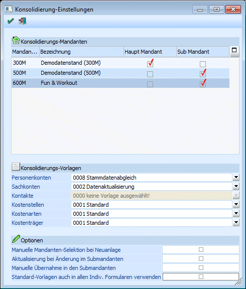
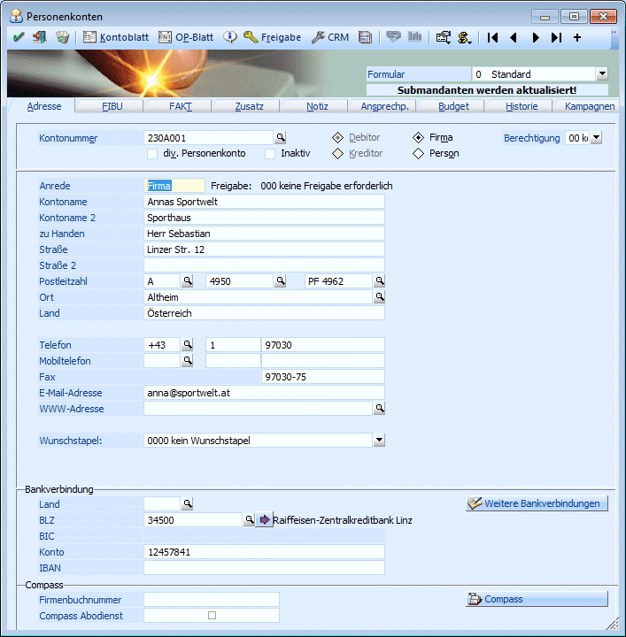

Um einen automatischen Abgleich von Sach-/Personenkonten, Kontakten und Kostenrechnungsstammdaten (Kostenstellen, Kostenarten, Kostenträger) über mehrere Mandanten zu ermöglichen, ist es notwendig, dass die Haupt- und Submandanten in den Konsolidierung-Einstellungen definiert wurden. Diese Definition findet im Menüpunkt
1 WinLine START
1 Optionen
1 Konsolidierung
1 Einstellungen
statt.

In der Tabelle werden alle Mandanten angezeigt, die sich in der Datenbank des gerade aktiven Mandanten befinden. Pro Mandant kann entschieden werden, ob es sich um den Haupt-Mandant, oder um einen SUB-Mandant handelt.
Achtung
Es kann nur einen Hauptmandanten geben und alle Mandanten müssen sich in einer Datenbank befinden.
Wird versucht, einen zweiten bzw. einen anderen Hauptmandanten anzuwählen, kommt eine entsprechende Meldung.
Konsolidierungs-Vorlagen
Werden hier Vorlagen eingetragen, werden diese in den Standard-Stammdaten-Fenstern für die Konsolidierung verwendet. D.h. die Verteilung auf SUB-Mandanten funktioniert, sobald hier eine Vorlage hinterlegt ist, bei der die Option "Submand. aktualisieren" aktiviert ist. Ist die Konsolidierung aktiv, wird unterhalb der Auswahl des Individuellen Formulars die Info "Submandanten werden aktualisiert" angezeigt.

Wird keine Vorlage ausgewählt, dann kann der Abgleich der Daten nur über die definierten Vorlagen erfolgen.
In den Auswahllistboxen für die Konsolidierungsvorlagen werden für Konten (Personenkonten / Sachkonten) jene Vorlagen angezeigt, die die Checkbox "Submandaten aktualisieren" in der Vorlage aktiviert haben. Für Kostenstellen, Kostenarten und Kostenträger werden hier alle Vorlagen angezeigt, weil es für diese Typen keine individuellen Formulare gibt.
Alle Felder, die in der Vorlage enthalten sind (also auch Zusatzfelder oder Eigenschaften) werden in die Submandanten übernommen. Für Kontakte steht diese Funktionalität nicht zur Verfügung, d.h. Kontakte können nur mit den speziellen Vorlagen konsolidiert werden.
Optionen
Ø Manuelle Mandanten-Selektion bei Neuanlage
Wenn diese Option aktiviert ist, wird bei der Neuanlage eines konsolidierten Stammdatenbereiches gefragt, in welche Mandanten das Konto gespeichert werden soll. Wird diese Option nicht aktiviert, werden alle neuen Datensätze automatisch in allen Submandanten angelegt.
Ø Aktualisierung bei Änderung im Submandanten
Wenn diese Option aktiviert ist, werden auch Änderungen, die in einem SUB-Mandanten durchgeführt werden, in den Haupt- und ggf. anderen SUB-Mandanten kopiert.
Hinweis:
Für die Aktualisierung der Stammdaten aus dem Submandanten wird der Eintrag in dem Feld "Konsolidierungskonto" herangezogen.
Wenn eine Änderung im Submandanten durchgeführt wird, wird der Hauptmandant auch aktualisiert, wenn die Kontonummer dort nicht im Feld "Konsolidierungskonto" eingetragen ist und das Konsolidierungskonto leer ist. Außerdem wird im selben Mandanten nach dem gleichen Konsolidierungskonto gesucht und entsprechend die Stammdaten aktualisiert.
Ø Manuelle Übernahme in den Submandanten
Durch die Option "Manuelle Mandanten-Selektion bei Neuanlage" ist es möglich, dass ein Datensatz im Hauptmandanten vorhanden ist, in einzelnen Submandanten aber nicht. Wird ein solcher Datensatz im Submandanten im Kontenstamm (oder im indiv. Formular) aufgerufen, erfolgt eine Abfrage, ob das Konto in den Submandanten übernommen werden soll.
Wird die Meldung mit JA bestätigt und der Datensatz übernommen, kann es sofort bearbeitet werden. Wird die Meldung mit NEIN bestätigt, kann dieser Datensatz im SUB-Mandanten nicht verwendet werden.
Ø Standard-Vorlagen auch in allen Indiv. Formularen verwenden
In den Konsolidierungs-Einstellungen wird unter Konsolidierungs-Vorlagen die Standard-Vorlage hinterlegt. Hier kann nur eine Vorlage hinterlegt werden, die das Flag "Submandant aktualisieren" gesetzt hat.
Normalerweise werden die Daten nur dann auf die SUB-Mandanten "verteilt", wenn in der verwendeten Vorlage die Option "Submand. aktualisieren" aktiviert ist, oder wenn eine Konsolidierungs-Vorlage definiert wurde. Wenn die Option "Standard-Vorlagen auch in allen Indiv. Formularen verwenden" aktiviert ist, dann werden auch bei den Vorlagen, bei denen die Option "Submand. aktualisieren" nicht aktiviert ist, die Daten auf die SUB-Mandanten kopiert.
Dabei werden dann alle jene Felder in den Submandanten übernommen, die in der Standardvorlage enthalten sind, andernfalls werden alle Felder für die Konsolidierung verwendet, die im entsprechenden Individuellen Formular enthalten sind.
Buttons
Ø  OK
OK
Durch Drücken der F5-Taste werden alle vorgenommen Einstellungen gespeichert, wobei die Einstellungen mandantenunabhängig gespeichert werden.
Ø  ENDE
ENDE
Durch Drücken der ESC-Taste wird das Fenster geschlossen, alle Änderungen gehen verloren.